✈️ 航班
TPE → ICN
07:30 → 11:00
2h30
ICN → DOH
18:30 → 23:00
10h30
🇰🇷 ICN 轉機 7h30
🇶🇦 DOH 抵達後過夜
🕐 當日流程
07:30
TPE → ICN
BR170 · Economy · B789
11:00
抵達仁川 T1
入境，確認 QR863 登機證與行李直掛狀態
12:00
🚆 前往雲西站
AREX 普通車約 14 分鐘，單程預算 ₩1,500–2,000／人
12:30
🇰🇷 韓式午餐
章魚鍋、烤肉、麵食或韓式炸雞四選一，視當天狀態決定
13:40
🛒 輕鬆採買
Lotte Mart／Olive Young／Daiso，以零食、美妝與旅行補給為主
14:40
🚆 返回仁川機場
最晚這個時間離開雲西；若入境延誤就直接縮短採買
15:00
🛋️ 安檢與貴賓室
回到 T1，完成出境後用餐、洗澡與休息
18:30
ICN → DOH
QR863 · Business · A35K
23:00
抵達 Doha
依轉機指標通過安檢，前往北區 Al Mourjan – The Garden
雲西短停以行李能直掛、已取得 QR863 登機證為前提；若需領行李或重新辦理托運，當天改為留在機場。
🇰🇷 雲西交通與午餐
🚆 T1 ↔ 雲西：單程約 14 分鐘
🎫 AREX 普通車：單程約 ₩1,500–2,000／人
👫 兩人來回預算：₩6,000–8,000
🎫 買票方式：信用卡購買一次性交通卡
入境後跟著 Airport Railroad／AREX 指標，前往 T1 交通中心 B1。
在自動售票機選中文或英文，選 All-stop Train／普通列車 ，目的地輸入 Unseo／雲西 。
選擇成人 2 人，直接以國外信用卡付款；每張票含 ₩500 押金 。
用一次性交通卡感應進、出閘門；抵達雲西後，把卡放入 Deposit Refund 押金退還機，取回 ₩500。
回程在雲西站重複同樣步驟，買「Unseo → Incheon Airport T1」。
這趟只搭兩次，不必特別買 T-money。自動售票機理論上可刷信用卡，但仍建議準備少量韓元，以防國外卡片或機台臨時無法交易。
🐙 紅色小新家章魚總店
紅色辣味活章魚鍋／白色清湯章魚鍋
開啟地圖 ↗
🥩 黃牛排骨 永宗島店
炭烤牛排骨／韓牛／冷麵
開啟地圖 ↗
·
圖片來源 ↗
🍜 孔陵洞元祖鯙魚麵 雲西店
水餃／麵食／排骨餃子
開啟地圖 ↗
🍗 Kyochon Chicken 雲西店
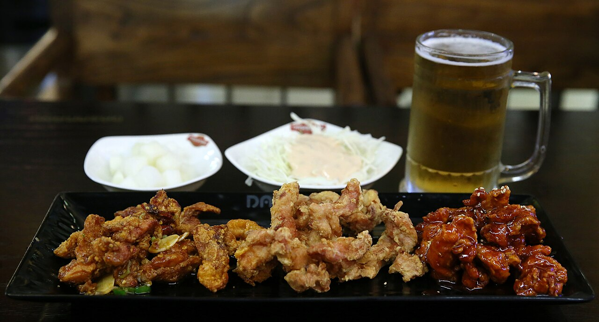
蜂蜜炸雞／醬油炸雞／紅辣炸雞
開啟地圖與確認營業 ↗
·
圖片來源 ↗
想吃永宗島特色就選紅色小新家，想吃韓國經典炸雞就選 Kyochon。炸雞店午間營業時間可能調整，需在出發前由地圖連結再確認。票價、菜單與營業時間為目前參考。
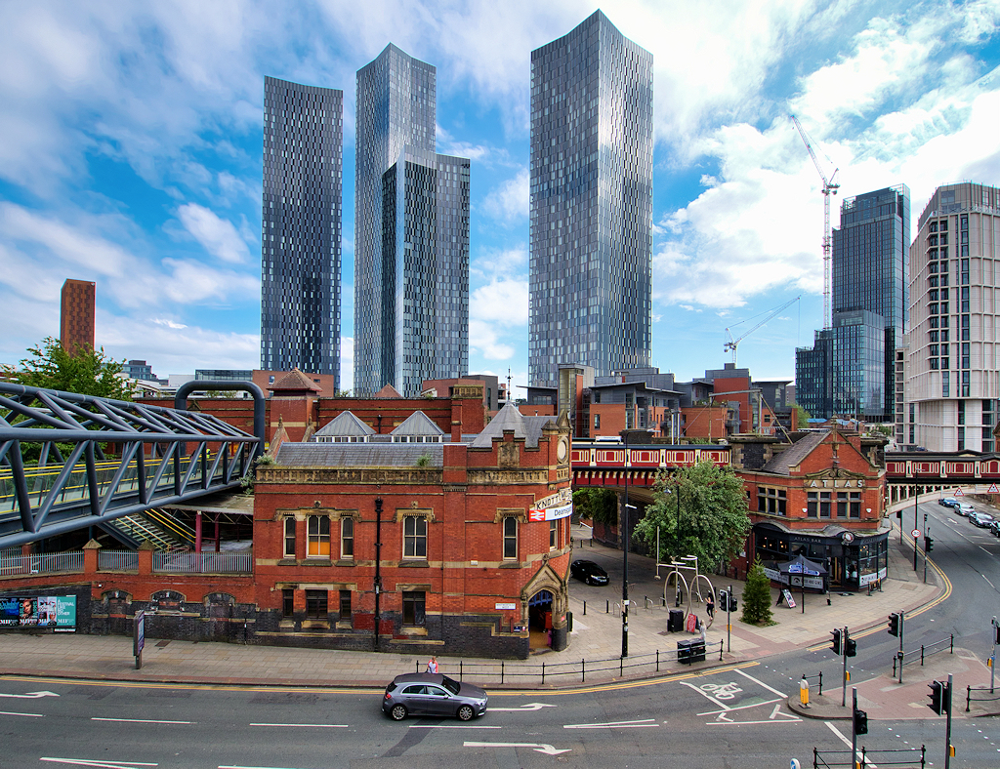
Manchester · Wikimedia Commons ↗
🌙 Doha 過夜轉機 · Al Mourjan The Garden
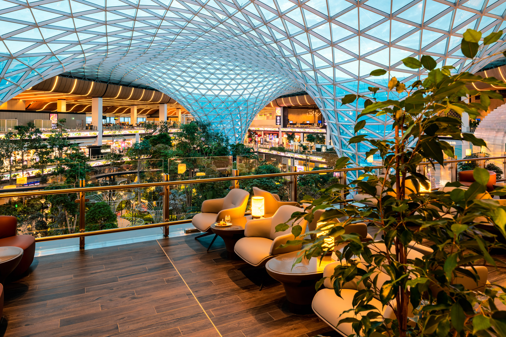
Al Mourjan Business Lounge – The Garden · Qatar Airways 官方圖片 ↗
⏱️ 轉機 8h50
🏃 跑步 1h
😴 休息約 3h25
🚪 06:50 離開貴賓室
23:00–23:40
抵達、轉機安檢與移動
確認 QR27 登機門；前往 North Node／Concourse C、Louis Vuitton 旁的 The Garden
23:40–00:20
🌿 入場、登記與參觀
先詢問安靜室、淋浴與健身房使用方式，再逛 The Orchard 景觀、餐飲區、休息區與健身設施；只吃少量點心
00:20–01:20
🏃 跑步機 60 分鐘
長途飛行後以輕鬆跑為主，包含暖身與收操；跑鞋、運動服放隨身行李
01:20–01:50
🚿 淋浴、更衣與補水
若現場需排隊，縮短參觀時間，不壓縮登機緩衝
01:50–05:15
😴 安靜室休息
約 3 小時 25 分；安靜室數量有限，若客滿就改找僻靜座位，設定兩組鬧鐘
05:15–06:10
🍳 早餐與咖啡
尖峰時段可能候位，優先選自助餐；用餐後整理隨身物品
06:10–06:50
最後整理與確認登機門
補水、上洗手間；06:50 離開，目標 07:10 抵達登機門，保留起飛前 40 分鐘
The Garden 全天開放，但免費入場以 Qatar Airways Business Elite／Comfort／Classic 為主，Business Lite 須另購。安靜室採現場安排，官方資料為前 6 小時免費；跑步機、淋浴與當日使用規則請在入口再次確認。若登機證標示較早截止，或登機門步行時間超過 20 分鐘，依現場資訊提早離開。
Qatar Airways 官方設施介紹 ↗
官方位置與開放時間 ↗
🛫 兩段長途飛行 · 吃、玩、睡
QR863 · ICN → DOH
18:30–20:45 起飛、迎賓飲料與完整晚餐20:45–22:45 電影、遊戲與商務艙體驗22:45–23:00 盥洗、換舒適衣物、鋪床23:00–03:30 主睡眠 4 小時 30 分03:30–05:00 早餐、整理與抵達以上用韓國時間；05:00 KST＝23:00 Doha
QR27 · DOH → MAN
05:50–06:20 起飛、直接準備補眠06:20–08:20 補睡 2 小時08:20–09:30 請空服員安排早餐／早午餐09:30–12:15 電影、遊戲或輕鬆活動12:15–13:10 盥洗、補水、準備落地以上直接用 Manchester 時間，協助調時差
理想睡眠合計約 9 小時 55 分：QR863 4h30＋貴賓室 3h25＋QR27 2h，在享受商務艙和隔天體力之間取平衡。最低底線是全程累計 8 小時；若第一段睡不到 4 小時，QR27 就少看一部電影並多睡 60–90 分鐘。登機後可先告知空服員預計睡眠與用餐時間，避免服務打斷休息。
✈️ 抵達 Manchester
DOH → MAN
07:50 → 13:10
7h20
🏨 住宿
目前考慮：
ibis Manchester Centre Princess Street
🚋 市區交通
市中心景點以步行為主
需要時搭 Tram
Contactless 即可
📍 下午行程
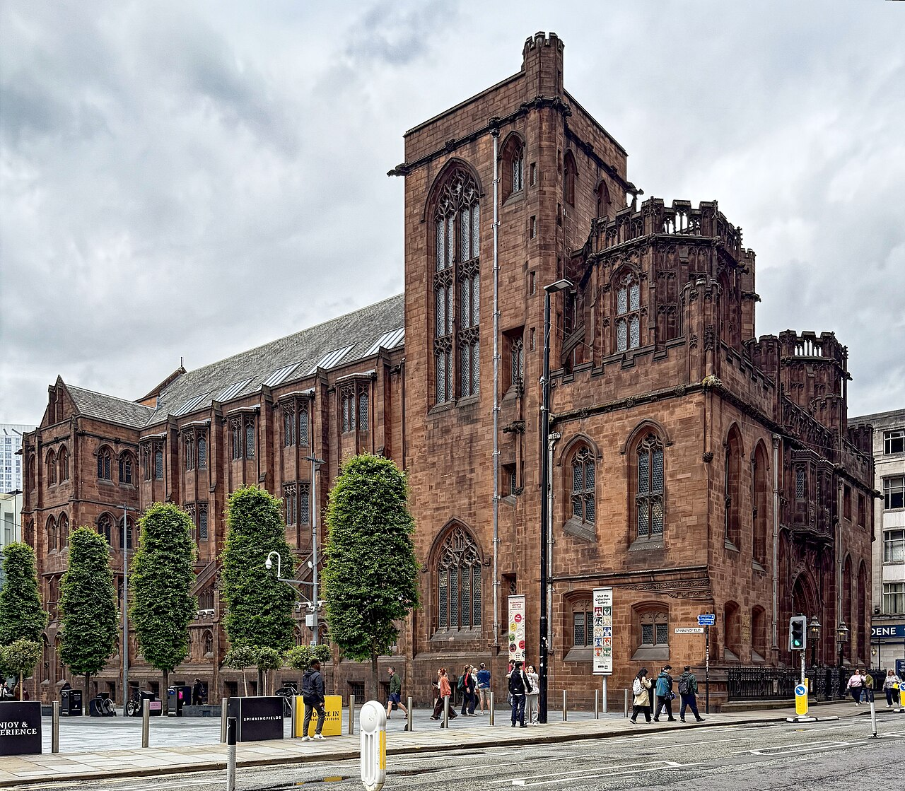
John Rylands Library · Wikimedia Commons ↗
13:10
抵達 Manchester
MAN Airport
15:15
🏭 Science and Industry Museum
免費常設展，先看 Power Hall／Revolution Manchester；16:10 準時離開
16:20–16:50
John Rylands Library 優先
免費、週六 17:00 關門，最後入場 16:40；集中看 Historic Reading Room 與哥德式建築
16:50–17:10
St Peter’s Square 快走
經 Albert Square／市政廳周邊拍照，再沿 Deansgate 往 BOX
17:20
🍺 抵達 BOX Deansgate
開賽前約 10 分鐘入座、快速點酒；訂位註明 Manchester United v Tottenham，正餐留到賽後
17:30–19:25
⚽ Manchester United v Tottenham Hotspur
Premier League · Old Trafford · Sky Sports；含中場與補時，預計約 19:25 結束
19:25–19:45
步行前往 Dimitri’s
沿 Deansgate 向南步行約 15 分鐘，建議預訂 19:45–20:00
19:45
🍽️ Dimitri’s 賽後晚餐
希臘／地中海分享餐；週六營業至 23:00，若球賽拖延仍有緩衝
21:15
Castlefield 夜間散步／回飯店
依精神狀況決定；第一天不再塞 Northern Quarter
科學產業博物館免費但建議先預約免費票，部分特展另收費；目前仍有整修與部分展館關閉。週六熱門轉播也需預訂 BOX 桌位，註明約 17:20 抵達。若 15:15 尚未離開飯店，直接取消博物館，優先保留 John Rylands 與球賽。
科學產業博物館免費票／開放資訊 ↗
John Rylands 官方參觀資訊 ↗
🍺 BOX Deansgate 看球消費
推薦 · 只喝不吃飽
Craft beer 約 £6.00–7.20／杯
想墊胃 · 加一份共享小食
Popcorn Chicken 單份 £7.95／分享份 £20.95
兩人看完整場建議抓 £25–40，約為各一至兩杯飲料＋一份小食，另可能加 10% optional service charge。4 杯兩品脫 stein 套組 £48，對兩人偏多且賽後還要吃晚餐，不推薦。
BOX 官方食物／飲料菜單 ↗
🍽️ Dimitri’s 兩人點餐建議
賽後分享版 · 約 £45.40
Tzatziki＋pitta bread £6.50
很餓就點 · Kalamata Meaty Platter £55
兩人分享，含 dip、pitta、Greek salad
推薦先點「分享版」，不夠再加 Greek Fries £7.50。兩杯飲料加上帳單預設的 10% discretionary gratuity，兩人晚餐約 £60–75；若點 £55 拼盤，約抓 £75–85。價格依目前官方菜單，出發前再確認。
Dimitri’s 官方最新菜單 ↗
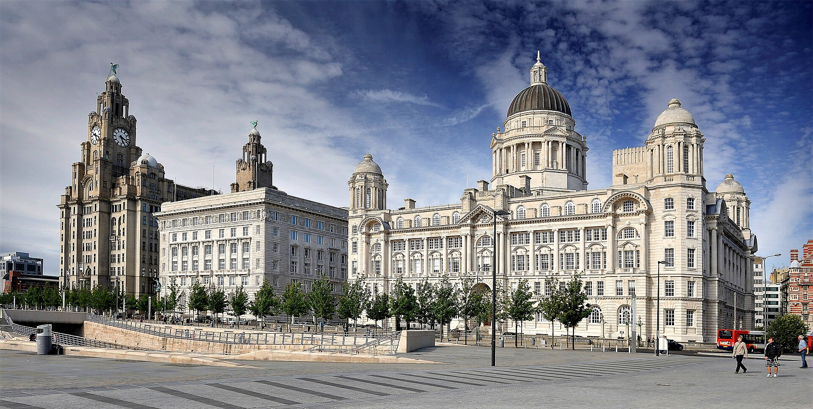
Liverpool Pier Head · Wikimedia Commons ↗
⚽ 球場二選一
Etihad Stadium
待確認
Old Trafford
待確認
🤔 問老婆好了 XD
🚆 Liverpool 經典一日路線
13:15–14:30
🔴 Anfield 周邊與比賽日氣氛
Lime Street 步行至 Queen Square Bus Station，搭 17 號公車直達 Anfield（一般單程最高 £2／人）；拍 Shankly Gates、Paisley Gateway、Hillsborough Memorial、球場外牆與球星壁畫
Queen Square 地圖 ↗ Anfield 地圖 ↗
14:30–15:20
🚌 Anfield → Hill Dickinson Stadium
14:30 準時離開，依即時路線搭一般公車並轉乘 54／56／58A 前往 Bramley-Moore Dock；當日 Anfield 16:30 開賽，候車與道路都要留緩衝
15:20–15:45
🔵 Hill Dickinson Stadium 外觀拍照
Everton 的新主場與 Bramley-Moore Dock 河岸；拍紅磚外牆、南看台、Everton Way／Fan Wall。當天 Everton 客場，可避開主場比賽人潮，但仍以現場開放範圍為準
球場地圖 ↗ 官方網站 ↗
15:45–16:15
🚌 Hill Dickinson Stadium → Pier Head
由 Great Howard Street 周邊搭一般公車回市中心；929 是 Everton 主場日接駁，本日不要把它算進計畫
16:15–17:00
🌊 Pier Head＋Royal Albert Dock
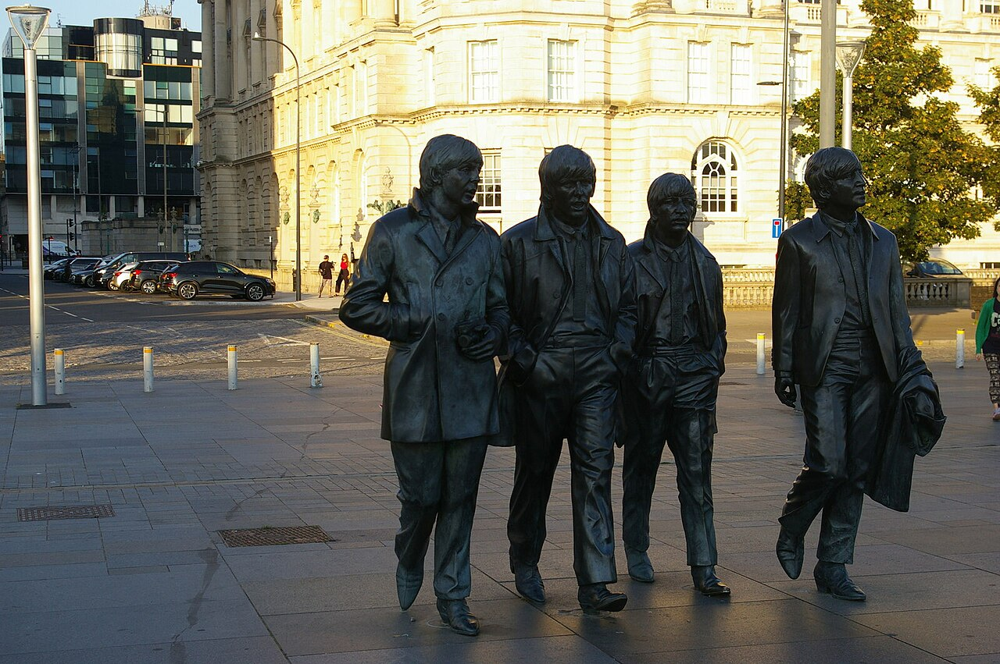
Beatles Statue · Pier Head 必拍點 · Wikimedia Commons ↗
17:15–18:25
🍺 可選：The Liverpool Pub 看下半場
14 James St、靠近 Waterfront 且有 live sport；約 17:15 抵達剛好接下半場，看到約 18:25 終場。熱門大戰建議先向店家確認轉播並訂位；景點延誤則直接跳過
酒吧地圖 ↗ Live Sport 節目 ↗
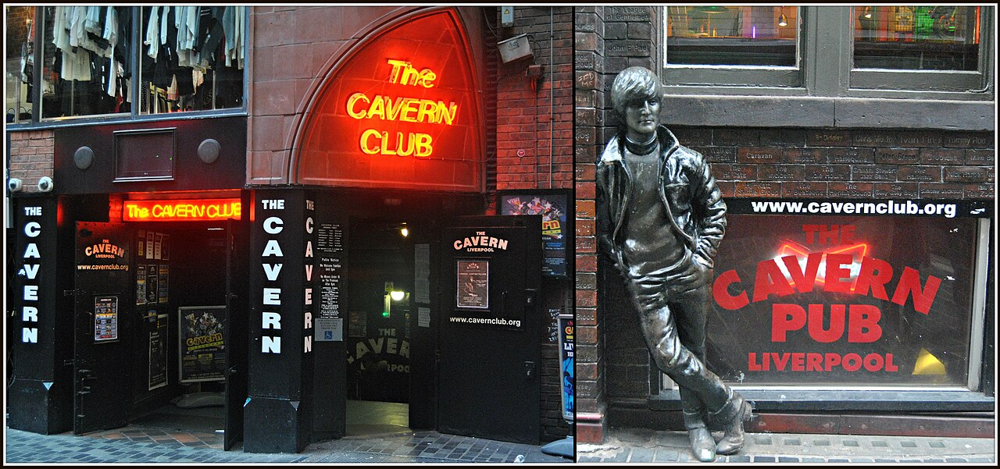
Cavern Club＋John Lennon Statue · The Beatles 發源地必去 · Wikimedia Commons ↗
18:30–19:15
🎸 必去：The Beatles 發源地／Mathew Street
19:15–20:00
🥡 平價晚餐／外帶
不排正式餐廳：在市中心買 meal deal、Greggs、外帶炸魚薯條或超市熟食，抓 £6–12／人；帶上火車吃也可以
10/11 Anfield 16:30 有 Liverpool v Manchester City。沒有球票就不要拖到開賽前才離開；球場商店、公車與道路都可能排隊。Hill Dickinson Stadium 是順路加點，但 Cavern Club 優先級更高：若 15:00 還沒離開 Anfield，直接取消 Everton 球場、搭 17 號回市中心。酒吧看球仍是下一個可刪項目。
🎧
The Beatles Story 本日不排： 不是免費景點，成人 £20／人、兩人 £40，官方平均參觀約 1.5 小時；目前通常 17:00 最後入場，和兩座球場＋看球衝突。經過 Albert Dock 時可拍入口，下次在 Liverpool 留半天再完整參觀。
官方票價 ↗ 地圖 ↗
⚽ Liverpool v Manchester City 比賽資訊
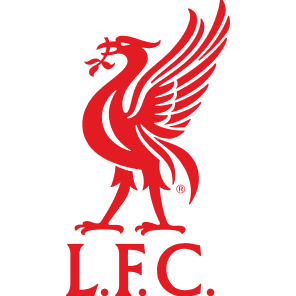
Liverpool
主場
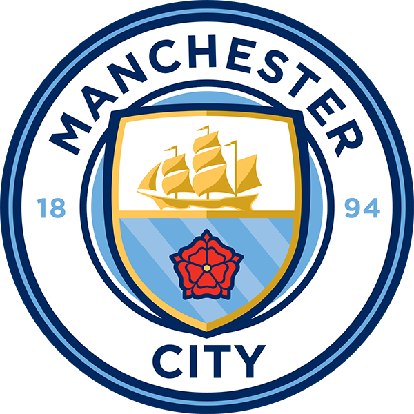
Manchester City
客場
🗓️
日期／開賽
10/11 Sun · 16:30 BST
🍺
看球地點
The Liverpool Pub
官方已將比賽改至 10/11（日）16:30，英國由 Sky Sports 直播。The Liverpool Pub 官網確認有大型賽事轉播，但單場節目表與座位仍應在出發前再確認；這段是可刪行程，Cavern Club 必去優先級更高。
LFC 官方改期／轉播公告 ↗
LFC 官方比賽頁 ↗
The Liverpool Live Sport ↗
看球酒吧地圖 ↗
🎟️ 10/11 公共交通票價整理
Manchester Tram
Zone 1＋2 週日一日票 £3.50／人
Manchester ↔ Liverpool 火車
Advance 約 £8–12／人來回
Liverpool 公車
Solo 一日票 £5.90／人
兩人交通合計
搶 Advance 約 £35–43
🚊 Tram：上車前在月台感應、下車後再感應，每人要用不同的實體卡或手機；也可在售票機買一日票。🚌 加入 Everton 球場後會搭 3 趟以上，買 Solo 一日票比逐趟 £2 單程票便宜；可在第一班公車向司機購買，出發前再確認適用業者與最新票價。
Manchester Tram 官方票價 ↗
National Rail 路線／購票 ↗
Liverpool 公車官方票價 ↗
LFC 官方 Anfield 交通 ↗
🥪 全程省錢吃法
早餐： 住宿早餐、超市或麵包店，抓 £3–6／人。午餐： meal deal、三明治或前一晚先買好，抓 £4–7／人；移動日直接帶上火車。晚餐： 外帶、food hall、pub 主餐輪替，抓 £8–15／人；真正想吃的特色店才坐下來。原則： 一天最多一餐正式餐廳，不為了「排滿餐廳」多花時間與服務費；10/10 Dimitri's 保留為 Manchester 的特色餐。
兩人一般日餐費先抓 £35–55（不含酒）；有正式餐廳的日子再另外加預算。
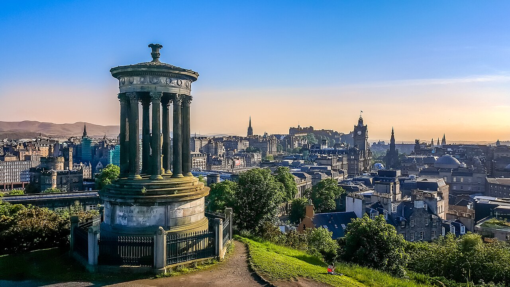
Edinburgh · Wikimedia Commons ↗
🎫 Manchester → Edinburgh
✓ 已購票
MCR → EDB
TransPennine Express
Monday · 12 October 2026
Direct
08:24
Manchester Oxford Road
🚆
3h 13m
No changes
MCR → EDB
✅ 車票已完成購買；建議 07:55 前抵達 Manchester Piccadilly，月台資訊以當日看板與電子車票為準。
🗓️ 當日流程
08:24
🚆 Manchester Oxford Road 出發
TPE 直達 Edinburgh Waverley
13:45
Palace of Holyroodhouse
優先
約 1.5–2 小時
16:00+
Holyrood → Royal Mile
步行前往 Old Town
晚上
晚餐＋Old Town
Victoria Street／Grassmarket
👑 Holyroodhouse 10/12 開放至 18:00、最後入場 16:30；10/13（二）休館，不能延後一天。
Edinburgh Castle · Wikimedia Commons ↗
🚶 Edinburgh City Day
09:30
Edinburgh Castle
主景點
約 2–2.5 小時
15:30
National Museum of Scotland
約 60–90 分鐘
17:00
Princes Street / New Town
🚶 主要景點高度集中，原則上全部步行即可。
🟡 Arthur's Seat：看體力決定。後面 Highlands＋Skye 已有大量自然景觀，不是必排。
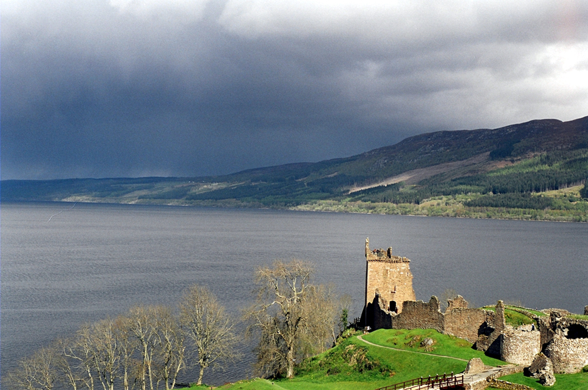
Loch Ness · Wikimedia Commons ↗
🚗 行程
上午
Skye 出發
Airbnb 退房後離開 Isle of Skye，開始往東南方向移動
白天
🏞️ Loch Ness
尼斯湖沿岸停留；Urquhart Castle 可視時間加入
下午
Loch Ness → Glasgow
繼續南下前往 Glasgow
晚上
🌃 Glasgow 住宿
Highlands 自駕段最後一晚
🏔️ Loch Ness 只有途中停留，不住宿；今晚住 Glasgow ，不再繞回 Edinburgh。
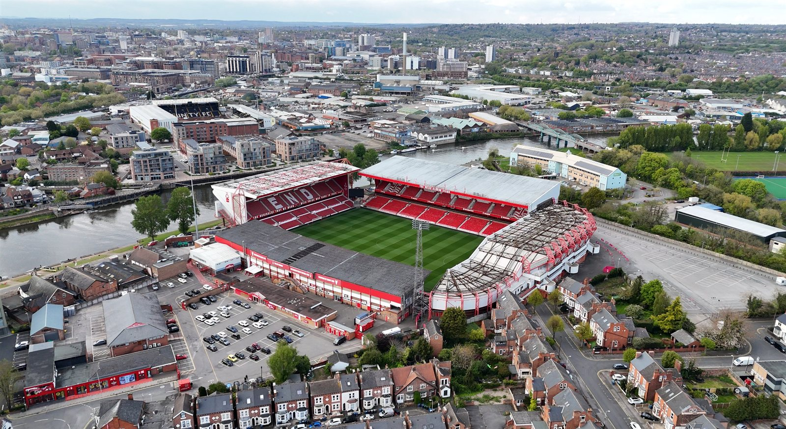
PREMIER LEAGUE · MATCHWEEK 8
Nottingham Forest
HOME
VS
Arsenal
AWAY
🗓️ Sunday · 18 October 2026
16:30
BST
🏟️ The City Ground · Nottingham
⚽ 10/18 足球賽
Nottingham Forest
主場
Arsenal
客場
📍 The City Ground
⏰ 16:30 BST 開賽 10/18 23:30 。
🔥 這場比賽非常適合直接塞進你的 10/18 路線：
Glasgow → Nottingham → The City Ground
Manchester Airport 。
10/19 早上 才歸還。
圖片：The City Ground / Wikimedia Commons
🕐 當日流程
上午
🚗 Glasgow 出發
Highlands 自駕段進入最後一天，租車繼續使用
白天
🚗 Glasgow → Nottingham
直接往英格蘭南下前往 Nottingham，預留交通與停車 buffer
下午
🏟️ 抵達 The City Ground
提前抵達球場，處理入場與觀賽
16:30
🔥 Nottingham Forest vs Arsenal
CONFIRMED
Premier League · Matchweek 8 · The City Ground
約18:20+
🏁 比賽結束
實際離場時間依比賽進程與球場人流而定
賽後
🚗 Nottingham → Manchester Airport
看完比賽後直接開車返回 MAN，不回 Glasgow
晚上
🛏️ Manchester Airport 住宿
住機場附近，隔天早上再歸還租車
🧠 為什麼這場很適合你的行程？
🏔️ Highlands 結束
10/17 已經安排
Skye → Loch Ness → Glasgow ，
所以 10/18 從 Glasgow 出發非常順。
⚽ 不用 London 快閃
不用為了看 Arsenal 特別跑 London，
而是直接在 Nottingham 看
Arsenal 客場 。
🛏️ 隔天風險低
看完球直接開回 Manchester Airport，
晚上住機場附近，
隔天早上直接還車；U290 尚未購買，訂妥後再鎖定報到時間。
🔥 球賽本身也夠有看頭
Premier League 正規聯賽，
而且是
Nottingham Forest 主場 vs Arsenal 。
⚠️ 交通要留 buffer：
10/18 不還 ，
一路使用到 10/19 早上 。
Manchester Airport 住宿 。
10/19 U290 尚未購買
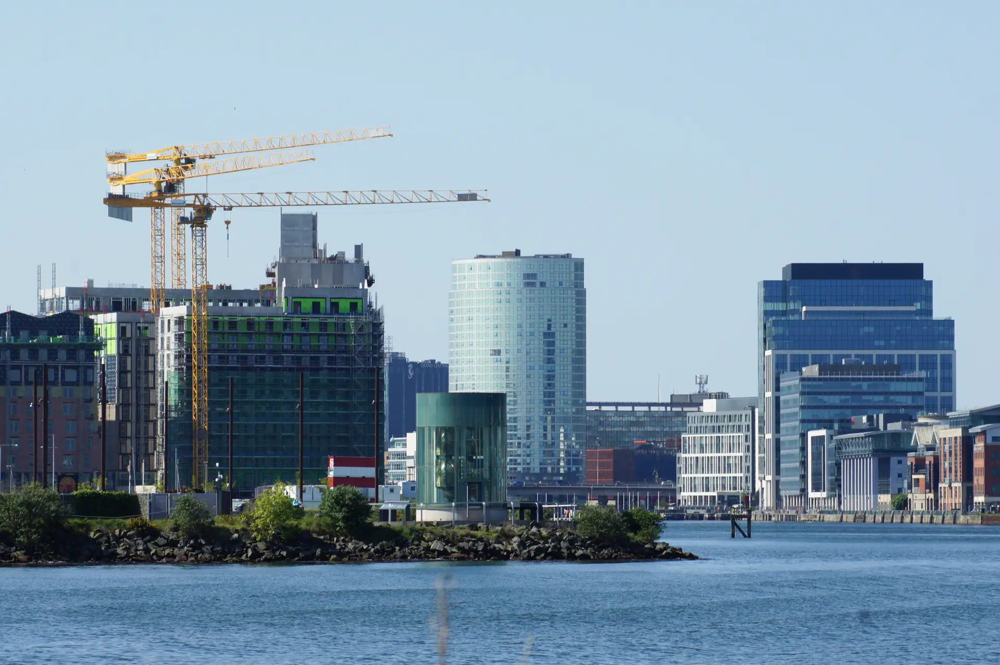
Belfast · Wikimedia Commons ↗
✈️ U290 尚未購買
MAN → BFS
08:40 → 09:40
1h00
🕐 當日流程
清晨
Manchester Airport 住宿 → 航廈
前一晚已住機場
不需要再從市區趕機場
08:40
MAN → BFS
尚未購買
U290 · Economy · A320
🟢 10/18 已住 Manchester Airport，
10/19 直接前往航廈，這段風險比前一版低很多。
✈️ QR20
DUB → DOH
08:15 → 17:20
7h05
✈️ 抵達 Doha 後，
隔日凌晨還有下一段 QR836。
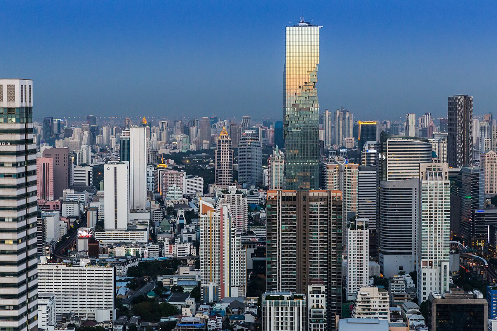
Bangkok · Wikimedia Commons ↗
🛏️ 行程
Bangkok 停留
自由活動／休息
準備隔天回台灣
🟡 這天目前看起來是回程中間的停留日，
實際安排依住宿與是否出機場決定。
✈️ TG634
BKK → TPE
12:40 → 17:20
3h40
🏁 Honeymoon complete! 🇹🇼 回家啦 XD